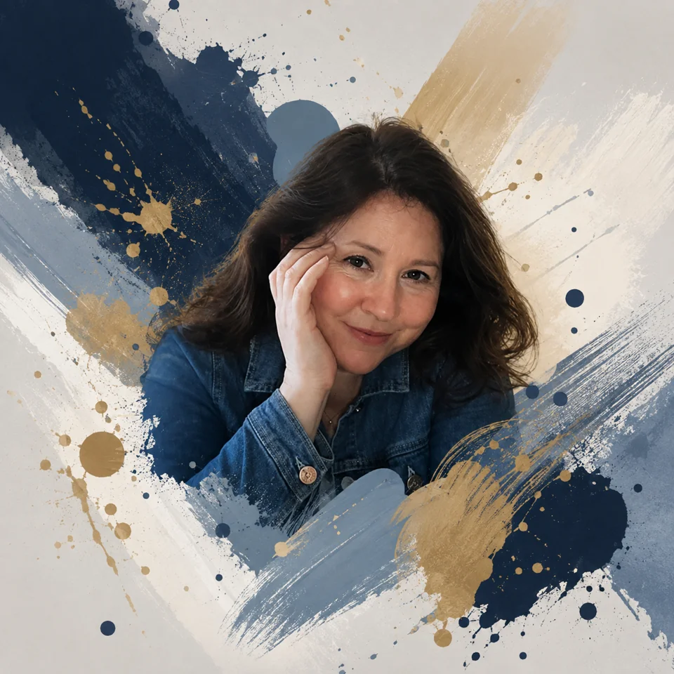
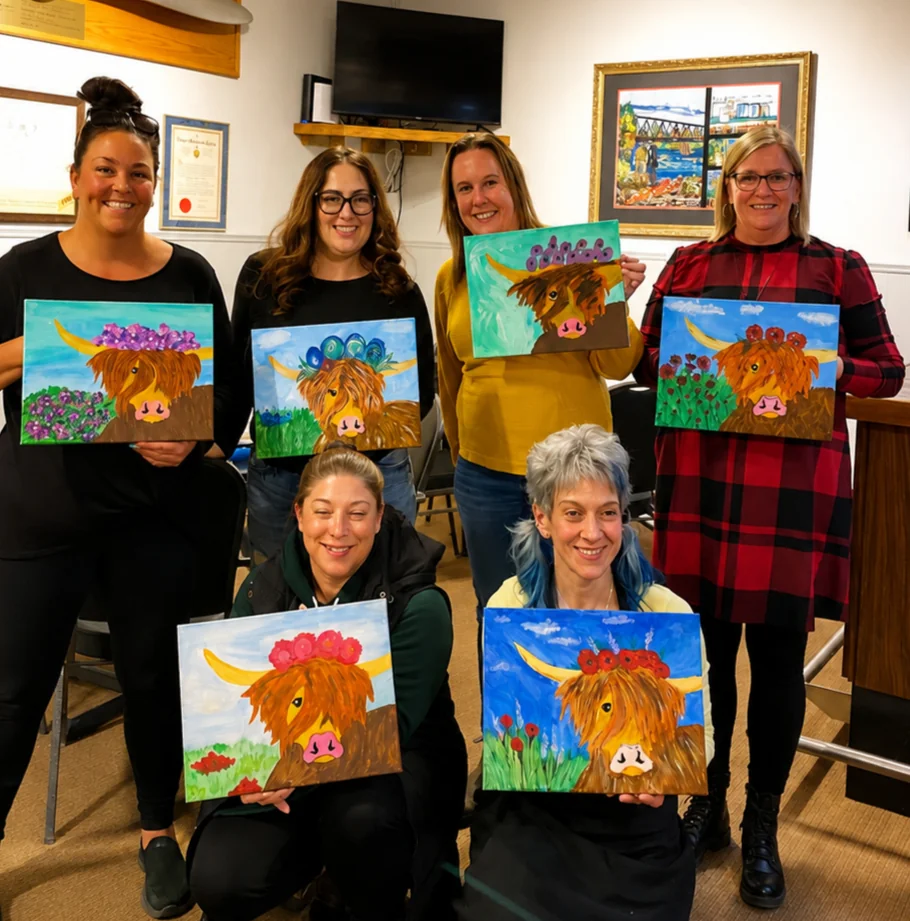

Meet Lorraine.
Lorraine Skarratt is the painter behind The Social Bee. She hosts the events, brings the materials and helps each painter find their own way through a design.


Room for every painter.
Growing up, Lorraine was the “artsy fartsy kid.” Like a lot of adults, she put painting aside for more practical things. Starting The Social Bee gave her a reason to open the paint box again and invite other people to the table.
Her favourite part comes midway through a party, when someone who arrived convinced they couldn’t paint looks up and realizes their picture is coming together.
“Had a home party with Lorraine, so much fun. Looking forward to our next artistic adventure.”Ruth, private party guest
Paint together.
Come along to a public night or invite Lorraine to your next get-together.